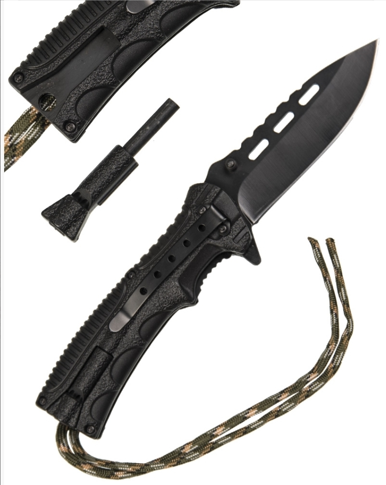
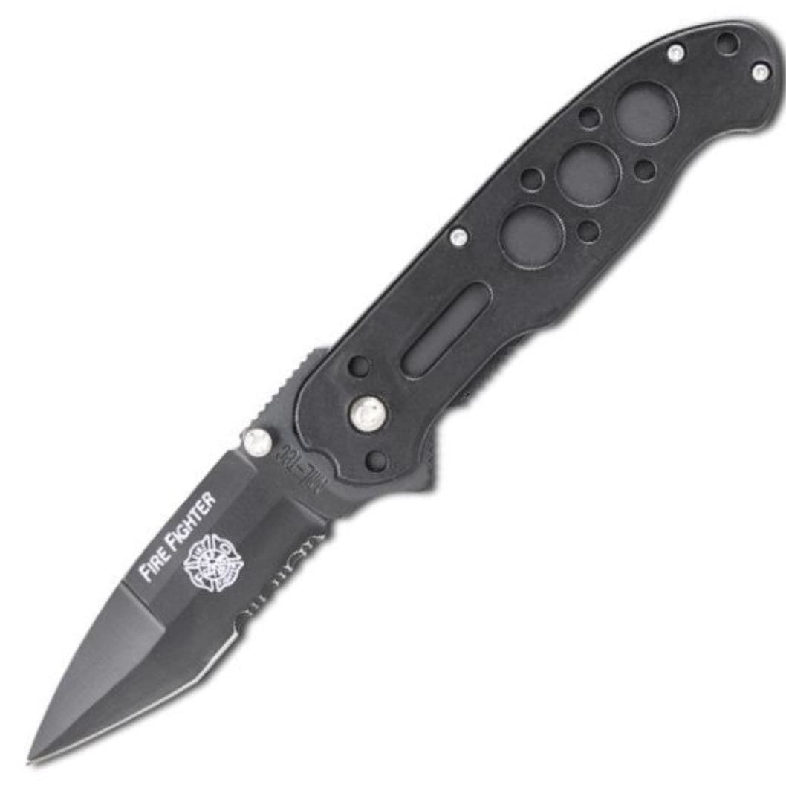

Vesta Oliv
200 Lei
Cod produs: MIL001
Descriere Produs:
Descriere produs:
-material exterior: 100%
nilon -căptuşeală: 100%
poliester -umplutura: 100%
poliester -inchidere cu fermoar dublu sens
4 buzunare exterioare
2 buzunare interioare
gluga detasabila

Vesta Operationala USMC
235 Lei
Cod produs: MIL002
Descriere Produs:
-material 100% poliester
-inchidere frontala cu fermoar
-6 buzunare exterioare cu scai
-buzunar pentru busola
-2 buzunare interioare
-toc reglabil pentru pistol
-centura cu inchidere rapida cu 6 bucle pentru accesorii
-marime ajustabila cu plasa din poliester
CAMUFLAJ VEGETATO
Tipul de camuflaj utilizat in prezent de catre Armata Italiana, Air Force, Navy.
Bluza Mil-Tec Oliv
50 Lei
Cod produs: MIL003
Descriere Produs:
bluza oliv
100% bumbac
Mil-Tec
Tricou Barbatesc Tactical Quickdry Dark Coyote
60 Lei
Cod produs: MIL004
Descriere Produs:
100% Polyester
- t-shirt wiht athletic fit
- quickdry
- breathable
- very comfortable to wear

Echipament Impermeabil
100 Lei
Cod produs: MIL005
Descriere Produs:
100% POLIESTER
JACHETA ARE INCHIDERE CU FERMOAR IN FATA,GLUGA INTEGRATA IN GULER,2 BUZUNARE LATERALE.
PANTALONI LUNGI PE ELASTIC.

Black Combat Knife with Rubber Handle
82 Lei
Cod produs: MIL006
Descriere Produs:
Blade: 100% Stainless Steel
Hilt: rubberized plastic
Scabbard: 100% Polyester
Blade length: 15 cm
Total length: 27 cm

Camo One Hand Paracord with Fire Starter
45 Lei
Cod produs: MIL007
Descriere Produs:
Blade: 3CR13 Steel
Hilt: ABS plastic
Paracord: 100% Nylon
Blade length: 10 cm
Total length: 21,5 cm
- black drop-point-blade
- liner lock
- integrated paracord rope on hilt
- with belt clip
- with thumb pins
- hilt with thumb rest
- fire starter in hilt
- fire starter with small whistle
One-Hand Knife Stone Washed
35 Lei
Cod produs: MIL008
Descriere Produs:
Blade: 7Cr17Mov Steel
Hilt: Stainless Steel with aluminum part
Blade length: 9,5 cm
Total length: 21,5 cm
- feels very good in the hand
- slightly curved, stone washed blade
- including clip on hilt
- elaborately designed hilt
- ′fire department′ emblem on hilt
- thumb rest
Neck Knife with Chain
70 Lei
Cod produs: MIL009
Descriere Produs:
Blade: 100% Stainless Steel
Hilt: 100% Stainless Steel
Scheide: Kydex®
Blade length: 6 cm
Total length: 16 cm
- including scabbard with chain
Combat Knife with Sheath
140 Lei
Cod produs: MIL010
Descriere Produs:
Blade: 420J2 Steel
Hilt: Thermoplastic Rubber
Scabbard: 100% Polyester, Polyurethane coated
Blade length: 17,5 cm
Total length: 30 cm
- black blade
- multifunctional scabbard
Pocket Knife 'Skeleton' with Pouch
55 Lei
Cod produs: MIL011
Descriere Produs:
Blade: Steel
Hilt: Aluminum
Pouch: 100% Nylon
Blade length: 9,5 cm
Total length: 21 cm

Briceag Firefighter Negru
? Lei
Cod produs: MIL012
Descriere Produs:
- Material lama: otel
- Material maner: metal
- Lungime lama: 8 cm
- Lungime totala: 19,5 cm
- Greutate: 97 g
- Piedica metalica pentru inchidere
- Clema metalica pentru prinderea la curea
- Culoare lama: negru
- Culoare maner: negru